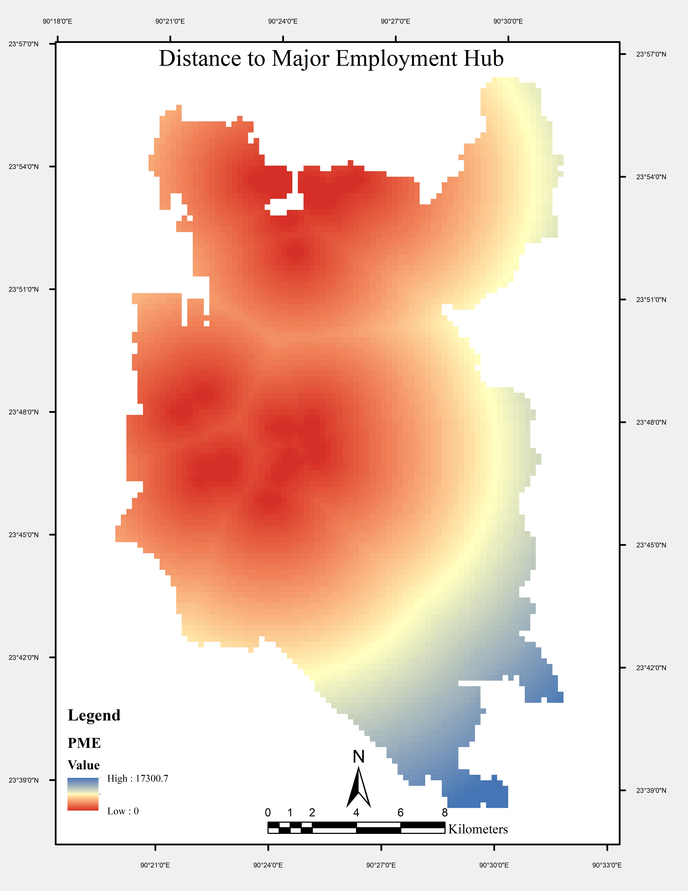

üîç Project Description
Dhaka is experiencing unplanned urbanization, population surge, environmental degradation. A strategy to cope up with these situations practiced in global world called “Transit Oriented Development (TODs)”. It helps to reduce automobile dependency, green house gas emissions and integrate public transport systems for better liveability, inclusiveness and sustainable development. Hence, TOD potential needs to be assessed. Several contemporary studies were done to evaluate the TOD index but temporal variation in this index has never been explored. This study will explore the changes of this potential throughout a decade using 5D indicators (Density, Diversity, Design, Destination Accessibility, Distance to Transit) and optimization techniques (Ant Colony Optimization and Particle Swarm Optimization).
Preparation of indicators for time interval is being progressed but not completed. After that, the completion of optimization will be done. Based on the compared results, we can suggest prioritize investments in specific zones and implement TOD friendly policies to improve resident’s quality of life.

